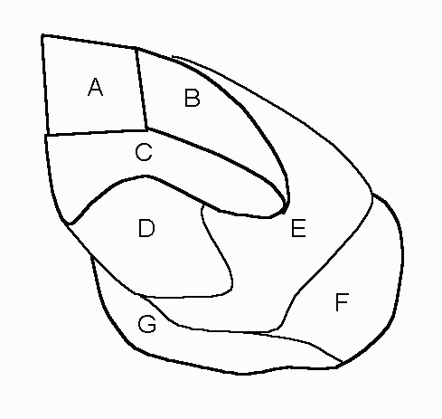

You may find this tutorial
or another
tutorial helpful. You will find the following builtin predicates
helpful trace, help(predicate), and listing. Online
documentation .
Files with hints and format : For most of the problems XXXAs4.pl
, for the Knapsack problem XXXAs4p2.pl
-
Write a procedure, countOcc( List, Element, Count) which counts the number
of time Element occurs in List and puts the value in Count. (Easy)
?- countOcc([1,3,4,6,3,2,1,3,5], 3, Count).
Count = 3
-
4 Colors Map Coloring Problem:
On a geographic map, let us define two countries
as neighbors, if they share a piece of border. Two countries are
not neightbors, if they join in a common point only or if they do not join
at all. Your problem is to write a logical prolog program that given
a map with countries A, B, ...G (figure below), the program will allocate
one of four colors to each country, so that no adjacent counties will have
the same country.
First use atoms for each color you want to use.
i.e. red, blue, green, yellow, purple.
You can either enumerate all permutation of colors neighbors can have.
That will be 12 facts.
OR you can enumerate all combination of colors that can be adjacent.
That will be 6 facts and then include 2 neighbor rules that defines the
remaining possible permutations of color pairs.
Now you are ready to define the one rule, mapcolor(A,B,C,D,E,F,G),
to find the possible color combinations for the map below. (Writing
the Prolog for this is much easier than describing the problem.)

-
0/1Knapsack problem. See XXXAs4p2.pl
. (double points).
-
Ackermann's function is a simple but very interesting non-trivially recursive
function. It is surprising that for such a simple definition ack(4,4)
can NOT be computed within a resonable time .
Definition of Ackermann's function: ack(m,n)
| ack(m,n) = n + 1 |
m = 0 |
| ack(m,n) = ack(m-1,1) |
n = 0 & m \= 0 |
| ack(m,n) = ack(m-1,ack(m,n-1)) |
n \= 0 & m \= 0 |
In the early days of imperative languages, recursion was not very fashionable
and implementions put restrictions on what depth of recursion was achievable.
The Ackermann function was used to measure the recursion capability of
a compiler by defining the Ackermann Number N of the compiler as the largest
N for which
ack (3,N)
gives an answer without a stack overflow.
Program Ackermann's function in Prolog and find the Ackermann Number
N of your Swipl environment.
-
Implement myMerge(+List1, List2, -Result), that combines
two sorted lists of atoms, List1 and List2 into a sorted list of atoms,
Result. (I used cuts to eliminate wrong alternate solutions.)
?- myMerge([abc,f,wxy,z],[aabc,fg,xyz,y],R].
R = [aabc, abc, f, fg, wxy, xyz, y, z];
no (If you use cuts.)
-
Implement partition (+List, -List1, -List2), that divides
List in two parts, List1, List2 of about equal size. (partition should
work for any kind of lists).
?- partition([1,2,3], L1, L2).
L1 = [1,3] %% or order or elements do not matter for correct solution
L2 = [2]
yes
?- partition([1,2,3,4],L1,L2).
L1 = [1,3]
L2 = [2,4]
yes
-
Using myMerge and partition implement
mergesortX(+UnsortedList, -SortedList),which
will sort a list of atoms.
-
Define a predicate
single(List,SingleList)
where List can be a list of lists, and SingleList is List but without lists
as elements. For example: (This is very hard.)
single([a,b,[c,d],[],[[[e]]],f],L).
L=[a,b,c,d,e,f];
-
What happens after the ";" ? (i.e. do you get additional incorrect answers?).
-
Can you correct it by using "cut"s? (Extra credit).
-
(easy- ONE relation)Define a predicate append3DL
that concatenates three difference lists:
?- append3DL( [z,y|A]
- A, [x,w | B] -B, [u,v | C] - C, What).
What = [z, y, x, w, u, v | _n] - _n
yes
-
Consider the following program:
fill(X,N,L) :- length(L,N), append([X],Lx,L), append(Lx,[X],L).
-
(Do not turn in).If the input X is a term and input N
is a positive integer, then what will the output L? Try the following..
also find other possible solutions with ";"
-
?- fill(xyz, 5, L).
-
?- fill(xyz, 5, [H|T].
-
Write a procedure that does not call any other procedures (than itself)
and performs the same relation as procedure fillr given above.
See if you get the exact answer even when more solutions are requested
(";").
-
[underconstruction--- may not give]Compare the execution time of the two
version for various values of N . (Use "trace" or write your
own append (use myAppend) and length(use myLen) so you can see trace to
see the execution steps. )
{kind=link}